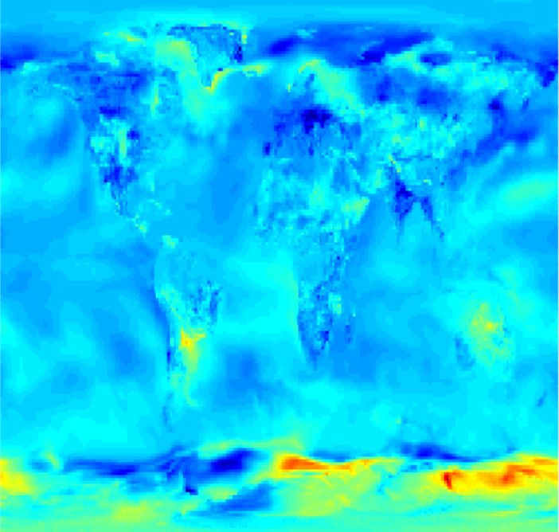
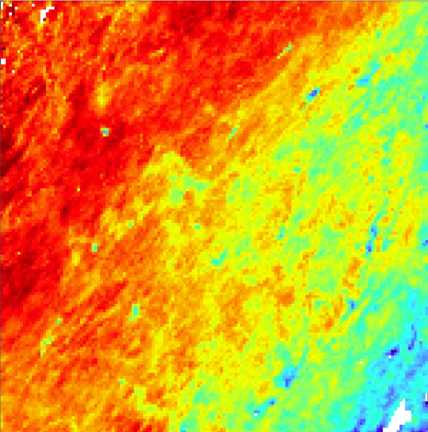
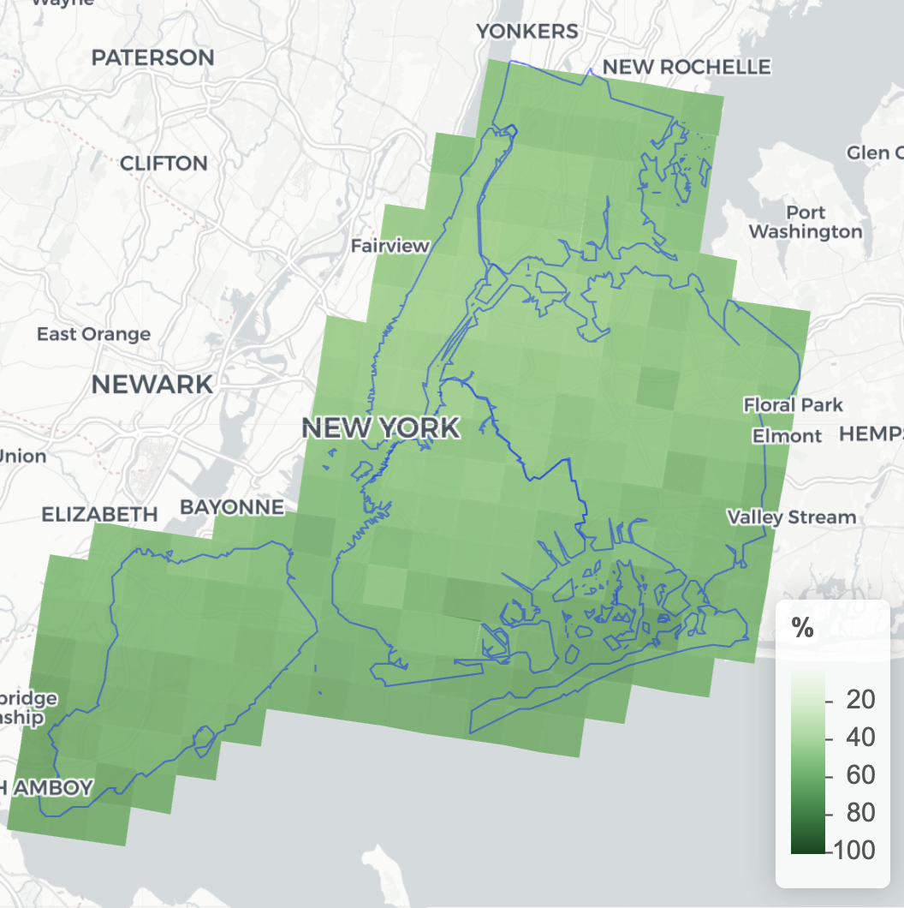
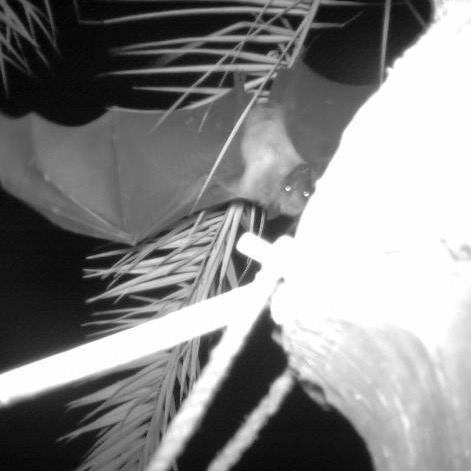
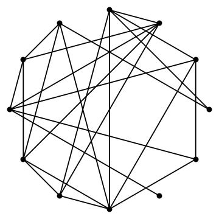

|
Zachary James Hi! I'm a PhD student at Cornell CIS advised by Joe Guinness, using AI to analyze satellite imagery and geospatial data. My research focuses on using generative AI and high performance computing to more efficiently interpolate and forecast enviornmental data. I was selected as a PiTech fellow at Cornell Tech to help NYC better use meteorological data. In my free time I enjoy cooking, making origami, and finding an excuse to look at the shellfish on Rockaway beach.
|

|
ResearchI am interested in using diffusion models, Gaussian processes, and high-performance computing to analyze geospatial data, particularly with applications to climate science and ecology. |
|

|
A Framework for Nonstationary Gaussian Processes with Neural Network Parameters
Zachary James, Joe Guinness Under Review github / arXiv We model the nonstationary parameters of a Gaussian process as functions of space using neural networks, enabling scalable inference on large datasets while maintaining interpretability. |
|

|
Implementation and analysis of GPU algorithms for Vecchia Approximation
Zachary James, Joe Guinness Statistics and Computing, 2024 journal / github / arXiv Vecchia Approximation can be high efficient on GPUs for large spatial datasets. We present memory and synchronization optimizations that improve performance by up to 20x over existing implementations. |
|

|
Communicating weather data when the stakes are high
Zachary James, Joshua Rapp blog / github Work done with the New York City Department of Emergencency Management to improve real-time forecasting using high-resolution meteorological data and scalable spatial models. |
|

|
Classificiation of Camera Trap Images
Zachary James, Barabara Han , Illya Fischoff, Tao Huang github We built an image classifier to identify fruit bats in camera trap images to help epidemiologists study the transmission of Nipah virus. This was done by fine-tuning a pretrained vgg16 model on a labeled dataset of images collected in Bangladesh. |
|

|
Doctor Shopping and the Patient Sharing Network of Healthcare Providers
Zachary James, Nicoleta Serban preprint A random graph model reveals that the urban-rural divide is a major determinant of opioid abuse in the state of Georgia. |
Miscellanea |
Teaching |
Graduate Student Instructor, STSCI5045 Python and Statistics
Graduate Student Instructor, BTRY6010, Intro Statistics Graduate Mentor, Cornell Math Directed Reading Program |
|
This website's source code is borowed from Jon Barron. |